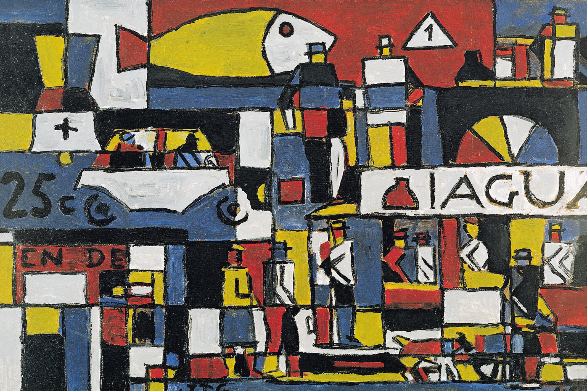

Joaquín Torres García


La obra será una base para que puedas cambiar colores, agregar elementos, detalles, hacer tu propia obra.
Escribí tus ideas o seleccioná alguna de la barra que está debajo. De forma rápida la IA va a transformar la obra que elegiste, a partir de tus ideas. Al terminar vas a poder ver el resultado en una ventana emergente y descargarla.
Fue una gran pintora mexicana que nació en 1907, exploró la identidad propia y su cuerpo con símbolos personales y colores intensos. Sus obras estuvieron muy vinculadas a los acontecimientos que marcaron su vida.
Obra: Autorretrato con chango y loro
Fue un gran pintor uruguayo que nació en 1874, fue pintor, escultor, escritor y maestro. Creó un movimiento muy importante el “Universalismo constructivo”, donde aparecen formas geométricas, planos, símbolos y colores. También se dedicó durante un tiempo a diseñar juguetes.
Obra: Constructivo con calle y gran pez
Fue una fotógrafa alemana, nacionalizada argentina que nació en 1904. Muchas de sus obras eran fotomontajes oníricos donde mezclaba la realidad y los sueños, con humor crítico. También en sus obras aparecían paisajes de nuestro país y retratos.
Obra: Sueño N° 38
Lee el texto para aprender como promptear y poder crear imágenes. Vas a encontrar consejos y ejemplos para divertirte jugando con la IA